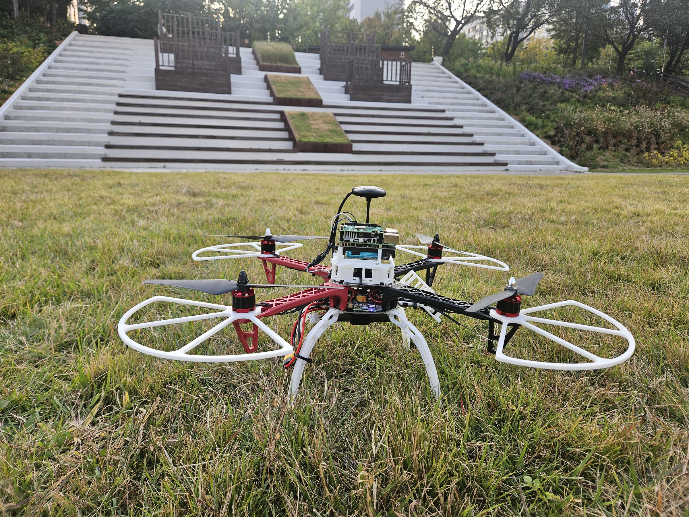

YOLOX로 열화상 영상 속 객체 탐지
ONBOARD AI / DRONE / OBJECT DETECTION & TRACKING
진행 중ARGUS 온보드 AI 드론 객체 탐지 및 추적 시스템
ARGUS AI-powered Real-time Ground Object UAV Surveillance
열화상 영상에서 지상 객체를 찾고, 선택한 대상을 드론이 따라가도록 하는 시스템을 개발하고 있습니다. YOLOX 탐지는 기체에 실은 Hailo-8 NPU에서 실행하고, 탐지 결과를 추적과 PX4 비행 제어로 연결하도록 설계했습니다. 지금은 시뮬레이션에서 검증한 추적, 재획득, 추종 구조를 실기체에 올려 시험하고 있습니다.
- 기간
- 2026.09–진행 중
- 팀
- ARGUS 6인 팀
- 역할
- 팀장
YOLOX 학습과 Hailo NPU 적용
다중 차량 추적과 표적 재획득
개발 일정과 시스템 통합 관리 - 주요 구성
- F450 / Raspberry Pi 5 / Hailo-8 / LWIR / PX4

01 / BACKGROUND
온보드 처리가 필요한 이유
지상 장비와 통신이 끊겨도 동작하도록 영상 처리를 기체 안에서 끝내는 것이 목표입니다. 어두운 환경에서도 대상을 볼 수 있도록 장파장 적외선(LWIR) 카메라를 쓰고, 객체 탐지부터 추적과 추종 판단까지 기체에서 처리하도록 설계했습니다.
연속 영상에서 같은 대상 추적
대상 위치에 따라 이동 속도와 기체 회전(yaw) 명령 계산
02 / SYSTEM
장치별 역할과 연결 구조
Raspberry Pi 5는 영상 전처리와 대상 추적, 추종 판단을 맡고, Hailo NPU는 YOLOX 추론만 맡도록 역할을 나눴습니다. 추종 명령은 PX4 비행 제어기로 보내고, 지상 통제기에서는 영상과 상태를 보며 추종 시작과 중단을 요청합니다. 카메라는 USB, Hailo NPU는 PCIe, PX4는 UART(MAVLink)로 Raspberry Pi 5에 연결하고, 지상 통제기와는 Wi-Fi로 통신합니다.
저는 팀장으로서 개발 일정과 시스템 통합을 관리하면서 YOLOX 학습, Hailo NPU 적용, 다중 차량 추적과 표적 재획득을 담당했습니다.

03 / PIPELINE
영상에서 추종 명령까지
오래된 영상 때문에 제어가 늦어지지 않도록 최신 프레임을 우선 처리하는 구조로 설계했습니다. 탐지 결과는 대상 추적에, 추적 결과는 이동 속도와 회전 명령 계산에 쓰이도록 모듈 사이에 주고받을 데이터를 정했습니다.
영상 처리와 비행 명령은 서로 다른 프로세스로 나눴습니다. 인지 프로세스는 영상을 받아 탐지 결과만 내보내고, 기체 명령은 제어 프로세스만 만듭니다. 두 프로세스 사이에는 큰 영상 대신 탐지 결과 같은 작은 메시지만 오갑니다.
제어 프로세스는 검출 상자를 지면 좌표로 바꾼 뒤 UCMC로 여러 차량을 추적합니다. 드론이 움직이면 화면 속 위치에 카메라 이동이 섞이므로 화면이 아니라 지면 위치로 추적합니다. 사용자가 고른 표적은 추적 ID와 따로 관리해, 가려졌다 나타나 ID가 바뀌어도 위치와 이동 궤적, 주변 차량과의 관계로 같은 차량인지 확인한 뒤에만 다시 연결합니다.

04 / FAIL-SAFE
대상 소실과 사용자 개입 대응
선택한 표적의 관측이 끊기면 관측 공백 대기, 재획득 후보 탐색, 후보 확인 단계를 거칩니다. 후보가 하나로 좁혀지고 여러 프레임에서 이동이 이어질 때만 같은 표적으로 다시 연결하고, 제한 시간을 넘기면 표적 상실로 처리합니다. 표적 고정 상태가 아니면 추종 명령을 만들지 않고 위치 유지(Hold)를 요청합니다. 사용자가 수동으로 개입하면 현재 상태와 관계없이 자동 추종을 해제합니다.

영상 처리와 비행 명령을 다른 프로세스로 나눴기 때문에, 한쪽이 멈추면 다른 쪽이 감지해 기체를 안전한 상태로 돌리도록 설계했습니다.
관측 유효 시간(250ms) 안에 새 탐지 결과가 오지 않으면 추종 명령을 멈추고 위치 유지를 요청합니다.
명령은 유효 시간(100ms)이 지나면 쓰이지 않고, PX4가 이동 명령을 받지 못하면 비행 제어기 자체의 안전 동작으로 전환합니다.
05 / VALIDATION
검증 계획
탐지, 추적, 추종은 소프트웨어 비행 시뮬레이션(SITL)에서 먼저 검증했고, 같은 구조를 실기체에 올려 영상 처리 지연과 기체 내 구동 안정성, 추종과 중단 동작을 검증할 계획입니다.
시뮬레이션(Gazebo, PX4 SITL)에서는 차량 2~4대가 X자로 교차하는 시험 4회에서 교차 뒤에도 처음 고른 차량을 계속 따라갔고, 다른 차량을 따라간 경우는 없었습니다. RGB 영상으로 진행한 시험이며, 완전히 가려진 뒤 다시 잡는 상황은 따로 시험할 계획입니다.
- 탐지와 응답탐지 성능과 영상 입력부터 제어 명령까지 걸리는 지연 시간
- 기체 내 구동NPU 처리 속도, 소비 전력과 온도
- 비행 연동시뮬레이션과 실기체의 추종 제어 반응 비교
- 추종 중단과 재개대상 소실, 수동 개입, 재탐지 상황의 동작
지금은 탑재 장비를 모두 실은 실기체를 실내와 야외에서 띄워 시험하고 있습니다.